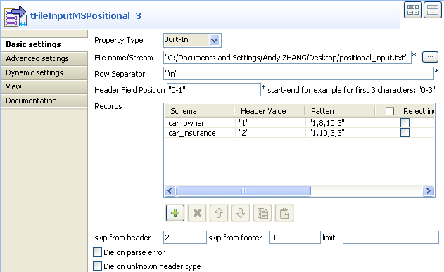
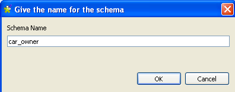
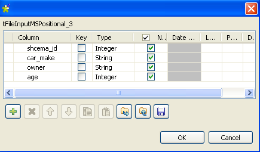

|
Component family |
File/Input | |
|
Function |
tFileInputMSPositional reads multiple schemas from a positional file. | |
|
Purpose |
tFileInputMSPositional opens a complex multi-structured file, reads its data structures (schemas) and then uses Row links to send fields as defined in the different schemas to the next Job components. | |
|
Basic settings |
Property type |
Either Built-in or Repository. |
|
|
|
Built-in: No property data stored centrally. |
|
|
|
Repository: Select the repository file where the properties are stored. The fields that follow are completed automatically using the data retrieved. |
|
|
File Name |
Name of the file and/or the variable to be processed Related topic: see Talend Open Studio User Guide. |
|
|
Row separator |
String (ex: “\n”on Unix) to distinguish rows. |
|
|
Header Field Position |
Start-end position of the schema identifier. |
|
|
Records |
Schema: define as many schemas as needed. Header value: value in the row that identifies a schema. Pattern: string which represents the length of each column of the schema, separated by commas. Make sure the values defined in this field are relevant with the defined schema. Reject incorrect row size: select the check boxes of the schemas where to reject incorrect row size. Parent row: Select the parent row from the drop-down list. By default, it is <Empty>. Parent key column: Type in the parent key column name. If the parent row is not <Empty>, this field must be filled with a column name of the parent row schema. Key column: Type in the key column name. |
|
|
Skip from header |
Number of rows to be skipped in the beginning of file. |
|
|
Skip from footer |
Number of rows to be skipped at the end of the file. |
|
|
Limit |
Maximum number of rows to be processed. If Limit = 0, no row is read or processed. |
|
|
Die on parse error |
Let the component die if an parsing error occurs. |
|
|
Die on unknown header type |
Length values separated by commas, interpreted as a string between quotes. Make sure the values entered in this fields are consistent with the schema defined. |
|
Advanced settings |
Process long rows (needed for processing rows longer than 100,000 characters wide) |
Select this check box to process long rows (this is necessary to process rows longer than 100 000 characters). |
|
|
Advanced separator (for numbers) |
Select this check box to modify the separators used for numbers: Thousands separator: define separators for thousands. Decimal separator: define separators for decimals. |
|
|
Trim all column |
Select this check box to remove leading and trailing whitespaces from defined columns. |
|
|
Validate date |
Select this check box to check the date format strictly against the input schema. |
|
|
Encoding |
Select the encoding type from the list or select Custom and define it manually. This field is compulsory for DB data handling. |
|
|
tStatCatcher Statistics |
Select this check box to gather the Job processing metadata at a Job level as well as at each component level. |
|
Usage |
Use this component to read a multi schemas positional file and separate fields using a position separator value. You can also create a rejection flow using a Row > Reject link to filter the data which does not correspond to the type defined. For an example of how to use these two links, see the section called “Scenario 2: Extracting correct and erroneous data from an XML field in a delimited file”. | |
The following scenario reads data from a positional file, which contains two schemas. The positional file is shown below:
schema_1 (car_owner):schema_id;car_make;owner;age schema_2 (car-insurance):schema_id;car_owner;age;car_insurance 1bmw John 45 1bench Mike 30 2John 45 yes 2Mike 50 No
Drop one tFileInputMSPositional and two tLogRow from the Palette to the design workspace.
Rename the two tLogRow components as car_owner and car_insurance.

Double-click the tFileInputMSPositional component to show its Basic settings view and define its properties.
In the File name/Stream field, type in the path to the input file. Also, you can click the [...] button to browse and choose the file.
In the Header Field Position field, enter the start-end position for the schema identifier in the input file, 0-1 in this case as the first character in each row is the schema identifier.
Click the [+] button twice to added two rows in the Records table.
Click the cell under the Schema column to show the [...] button.
Click the [...] button to show the schema naming box.
Enter the schema name and click OK.
The schema name appears in the cell and the schema editor opens.
Define the schema car_owner, which has four columns: schema_id, car_make, owner and age.
Repeat the steps to define the schema car_insurance, which has four columns: schema_id, car_owner, age and car_insurance.

Connect tFileInputMSPositional to the car_owner component with the Row > car_owner link, and the car_insurance component with the Row > car_insurance link.
In the Header value column, type in the schema identifier value for the schema, 1 for the schema car_owner and 2 for the schema car_insurance in this case.
In the Pattern column, type in the length of each field in the schema, i.e. the number of characters, number, etc in each field, 1,8,10,3 for the schema car_owner and 1,10,3,3 for the schema car_insurance in this case.
In the Skip from header field, type in the number of beginning rows to skip, 2 in this case as the two rows in the beginning just describes the two schemas, instead of the values.
Choose Table (print values in cells of a table) in the Mode area of the components car_owner and car_insurance.